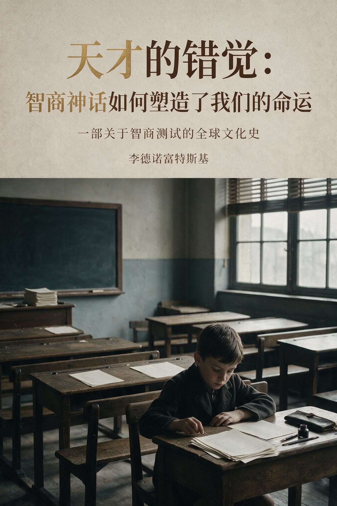
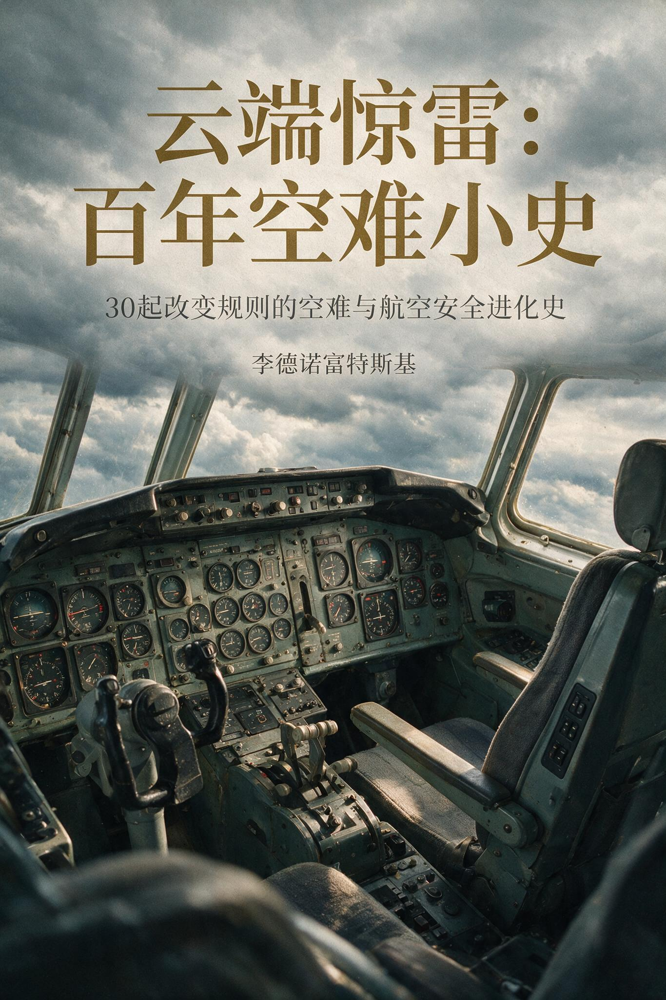

李德诺富特斯基
8 部公开作品 · EVORON AI电子书城

天才的错觉：智商神话如何塑造了我们的命运
中国史 · 30 章

云端惊雷：百年空难小史
科技史 · 30 章
杯中乾坤：中国古代酒文化的生成与流变
文化史 · 30 章
闺阁之内：明清江南女子的衣食住行
中国史 · 15 章

灶台千年：中国古代日常饮食变迁史
中国史 · 13 章

家国之间：大家族的千年建构史
人物传记 · 20 章

灯火与炊烟：中国古代日常生活的城乡分野
中国史 · 15 章

西施秘史：一个符号的千年建构与解构
中国史 · 15 章